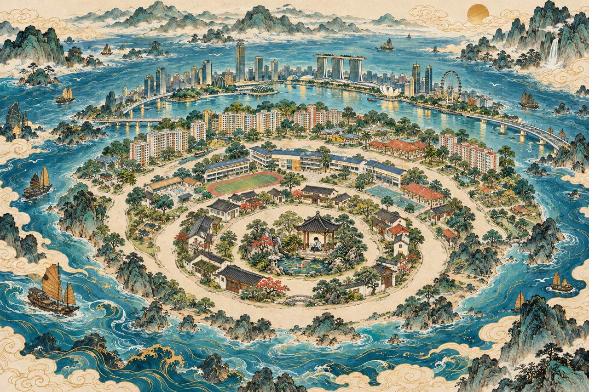

BVSS MTL CL UNIT · RADIAL ATLAS STUDY
谈天说地 · Topic Atlas
Mountains and seas, expanding from self to world.

Design mockup: buttons preview the region rather than open lesson content. The ordered strip is the larger phone and keyboard route. Artwork is original AI-generated ink illustration, without baked-in labels. Dark mode keeps the parchment illustration intact with dark surroundings and solid label panels. Band traces are interaction sketches, not exact region boundaries.